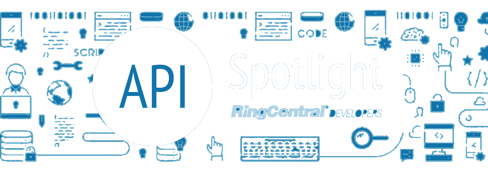

class: middle, center, inverse [<svg width="80" height="80" viewBox="0 0 250 250" style="fill:#fff; color:#0073ae; position: absolute; top: 0; border: 0; right: 0;" aria-hidden="true"><path d="M0,0 L115,115 L130,115 L142,142 L250,250 L250,0 Z"></path><path d="M128.3,109.0 C113.8,99.7 119.0,89.6 119.0,89.6 C122.0,82.7 120.5,78.6 120.5,78.6 C119.2,72.0 123.4,76.3 123.4,76.3 C127.3,80.9 125.5,87.3 125.5,87.3 C122.9,97.6 130.6,101.9 134.4,103.2" fill="currentColor" style="transform-origin: 130px 106px;" class="octo-arm"></path><path d="M115.0,115.0 C114.9,115.1 118.7,116.5 119.8,115.4 L133.7,101.6 C136.9,99.2 139.9,98.4 142.2,98.6 C133.8,88.0 127.5,74.4 143.8,58.0 C148.5,53.4 154.0,51.2 159.7,51.0 C160.3,49.4 163.2,43.6 171.4,40.1 C171.4,40.1 176.1,42.5 178.8,56.2 C183.1,58.6 187.2,61.8 190.9,65.4 C194.5,69.0 197.7,73.2 200.1,77.6 C213.8,80.2 216.3,84.9 216.3,84.9 C212.7,93.1 206.9,96.0 205.4,96.6 C205.1,102.4 203.0,107.8 198.3,112.5 C181.9,128.9 168.3,122.5 157.7,114.1 C157.9,116.9 156.7,120.9 152.7,124.9 L141.0,136.5 C139.8,137.7 141.6,141.9 141.8,141.8 Z" fill="currentColor" class="octo-body"></path></svg>](https://grokify.github.io/ringcentral-ai-bot-tutorial) <center> [](https://developer.ringcentral.com) </center> ## AI Chatbot Tutorial --- layout: false ### AI Bot Team Me * John Wang - [github.com/grokify](https://github.com/grokify) Bot Creators * Tyler Liu - [github.com/tylerlong](https://github.com/tylerlong) * Drake Zhao - [github.com/zxdong262](https://github.com/zxdong262) --- ### Agenda 1. Glip Chatbot Concepts 1. AI Bot Description 1. Tutorial Walkthrough --- class: middle, center, inverse ## A chatbot is a virtual assistant application that is accessed as a user in Glip --- ## Bot is a User 1. can only be deployed on a RingCentral account 1. has RingCentral `extensionId` 1. has `extension.type=Bot` 1. can call standard APIs on behalf of itself 1. update via `POST /restapi/v1.0/account/~/extension` 1. create subscriptions via PubNub and webhooks 1. can create Glip posts --- ## A Private or Public App 1. Private app for your company only 1. only needs 1 non-expiring, access token 1. installed via "Add to Glip" button 1. OAuth 2.0 is optional 2. Public app for any Glip company 1. needs 1 non-expiring access token per account 1. installed via "Add to Glip" button 1. installation requires OAuth 2.0 --- class: middle, center, inverse ## The Chatbot: ## AI-Powered, Public Voicemail Notification Chatbot --- ## Chatbot Description Public bot that allows subscription to new voicemails which are run through Google's Natural Language API * Public bot * Manages multiple bot access tokens * Posts new user welcome message * Links to end-user accounts via OAuth (RingCentral) * Manages multiple user access token * Accepts command to listen for new voicemail * Sends voicemails to Google Natural Language API * Posts results in Glip team --- class: middle, center, inverse ## The Tutorial: ## Walkthrough of a full-featured production-ready bot --- ## Tutorial 1. Core Bot Functionality 1. Bot Auth 1. Receiving Events 1. Creating Posts 2. Adding a Bot 1. Add to Glip Button 1. Welcome Message 3. Linking to Services 4. Responding to Events 1. User Commands 1. Service Updates 5. Installing and running the bot --- ## Bot Auth 1. Static tokens for bots to receive/create posts 1. Private bots can get a static token directly 1. Public bots recieve over OAuth2 --- ## Receiving Events Create a subscription using bot access token for the relevant Glip event filters. 1. Use `/restapi/v1.0/glip/groups` filter for joining groups 1. Use `/restapi/v1.0/glip/posts` filter to receive posts * Webhooks preferable online & using cloud functions * PubNub preferable when not online for private bots --- ## Creating Posts When creating a post, use the following event properties. 1. `ownerId` is the subscription creator * For bot posts (identified via `event` property), use to map to access token 1. `body.groupId` is the conversation id * Use to post reply 1. `body.creatorId` is the post creator * Use for at mention --- ## Add to Glip Button The button 1. Private bot button from Dev Portal 1. Public bot button from Dev Portal or link What it does 1. Launches OAuth 2.0 flow 1. Allows user to select bot name 1. Adds bot extension to account 1. Adds bot to direct message with user --- ## Welcome Message `body.eventType === 'GroupJoined'` && `body.type === 'PrivateChat'` ``` switch (body.eventType) { case 'GroupJoined': if (body.type === 'PrivateChat') { const bot = store.getBot(botId) await bot.sendMessage(body.id, { text: `Hello, I am a chatbot. Please reply "" if you want to talk to me.` }) } break ``` --- ## User Commands `src/lamda/lib/bot-webhook.js` 1. Process commands from user with `ownerId` == `bot.extensionId` 1. Requires linking to service 1. User subscription --- ## Linking to Services `src/lamda/lib/user-oauth.js` 1. Display OAuth 2.0 URL to open new browser window / tab 1. Save user token with mapping to user `extensionId` 1. Subscribe to notifications --- ## Service Updates 1. Receiving events `src/lamda/lib/user-webhook.js` 1. Retrieve data `src/lamda/lib/message-sync.js` 1. Create transcript `src/lamda/lib/speech2text.js` 1. Analyze text `src/lamda/lib/text-analysis.js` 1. Post results `src/lamda/lib/analysis-formatter.js` --- class: inverse [<svg width="80" height="80" viewBox="0 0 250 250" style="fill:#fff; color:#0073ae; position: absolute; top: 0; border: 0; right: 0;" aria-hidden="true"><path d="M0,0 L115,115 L130,115 L142,142 L250,250 L250,0 Z"></path><path d="M128.3,109.0 C113.8,99.7 119.0,89.6 119.0,89.6 C122.0,82.7 120.5,78.6 120.5,78.6 C119.2,72.0 123.4,76.3 123.4,76.3 C127.3,80.9 125.5,87.3 125.5,87.3 C122.9,97.6 130.6,101.9 134.4,103.2" fill="currentColor" style="transform-origin: 130px 106px;" class="octo-arm"></path><path d="M115.0,115.0 C114.9,115.1 118.7,116.5 119.8,115.4 L133.7,101.6 C136.9,99.2 139.9,98.4 142.2,98.6 C133.8,88.0 127.5,74.4 143.8,58.0 C148.5,53.4 154.0,51.2 159.7,51.0 C160.3,49.4 163.2,43.6 171.4,40.1 C171.4,40.1 176.1,42.5 178.8,56.2 C183.1,58.6 187.2,61.8 190.9,65.4 C194.5,69.0 197.7,73.2 200.1,77.6 C213.8,80.2 216.3,84.9 216.3,84.9 C212.7,93.1 206.9,96.0 205.4,96.6 C205.1,102.4 203.0,107.8 198.3,112.5 C181.9,128.9 168.3,122.5 157.7,114.1 C157.9,116.9 156.7,120.9 152.7,124.9 L141.0,136.5 C139.8,137.7 141.6,141.9 141.8,141.8 Z" fill="currentColor" class="octo-body"></path></svg>](https://grokify.github.io/ringcentral-ai-bot-tutorial) ### More Info Presentation https://grokify.github.io/ringcentral-ai-bot-tutorial Bot https://github.com/zxdong262/rc-ai-bot --- class: inverse [<svg width="80" height="80" viewBox="0 0 250 250" style="fill:#fff; color:#0073ae; position: absolute; top: 0; border: 0; right: 0;" aria-hidden="true"><path d="M0,0 L115,115 L130,115 L142,142 L250,250 L250,0 Z"></path><path d="M128.3,109.0 C113.8,99.7 119.0,89.6 119.0,89.6 C122.0,82.7 120.5,78.6 120.5,78.6 C119.2,72.0 123.4,76.3 123.4,76.3 C127.3,80.9 125.5,87.3 125.5,87.3 C122.9,97.6 130.6,101.9 134.4,103.2" fill="currentColor" style="transform-origin: 130px 106px;" class="octo-arm"></path><path d="M115.0,115.0 C114.9,115.1 118.7,116.5 119.8,115.4 L133.7,101.6 C136.9,99.2 139.9,98.4 142.2,98.6 C133.8,88.0 127.5,74.4 143.8,58.0 C148.5,53.4 154.0,51.2 159.7,51.0 C160.3,49.4 163.2,43.6 171.4,40.1 C171.4,40.1 176.1,42.5 178.8,56.2 C183.1,58.6 187.2,61.8 190.9,65.4 C194.5,69.0 197.7,73.2 200.1,77.6 C213.8,80.2 216.3,84.9 216.3,84.9 C212.7,93.1 206.9,96.0 205.4,96.6 C205.1,102.4 203.0,107.8 198.3,112.5 C181.9,128.9 168.3,122.5 157.7,114.1 C157.9,116.9 156.7,120.9 152.7,124.9 L141.0,136.5 C139.8,137.7 141.6,141.9 141.8,141.8 Z" fill="currentColor" class="octo-body"></path></svg>](https://grokify.github.io/ringcentral-ai-bot-tutorial) ### Thank You RingCentral Developers * https://developer.ringcentral.com * https://github.com/ringcentral * https://github.com/ringcentral-tutorials * https://medium.com/ringcentral-developers * https://twitter.com/ringcentraldevs Reach Me * https://twitter.com/grokify * https://github.com/grokify